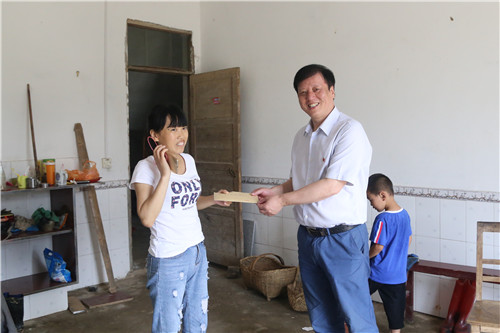
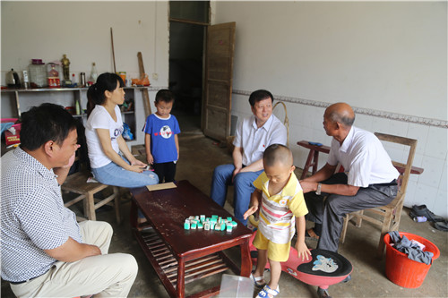

当前位置：学生发展 >
附属医院赴村建扶贫点走访慰问
发布日期：2017-08-17
为认真贯彻落实市委市政府关于脱贫攻坚工作的相关要求，切实做好精准扶贫工作。7月8日上午，由张志平院长、党委张南华书记带队，临床医学院/附属医院在家班子成员一行8人前往精准扶贫点九江县涌泉乡枫树村，开展走访慰问结对帮扶困难户工作，并检查督导临床医学院/附属医院驻村工作队的驻村帮扶工作。


在枫树村，院领导分别前往9户结对帮扶对象家中进行走访慰问，分别将3000元慰问金送到他们手中。这9户帮扶对象是该村部扶贫攻坚工作的“建档立卡户”，均为因病致贫，院领导充分结合自身医疗资源优势，对他们进行了一对一结对帮扶。在他们家中，院领导详细了解了他们的身体状况，询问了他们各自的扶贫第一书记，扶贫主任以及扶贫政策中得到的实惠等情况。同时向他们宣教了临床医学院/附属医院健康扶贫的相关政策，鼓励他们重拾对美好生活的信心，受到关怀的村民感动不已，连连道谢。
随后，在枫树村村部，临床医学院/附属医院领导与驻村干部和村班子成员进行了座谈。大家对各自帮扶的贫困户家庭情况进行了反馈，并认真听取了村支部吴学武书记近期工作与村建情况的汇报，同时就如何进一步做好包村帮扶工作与村领导干部交换了意见。张院长对枫树村领导干部“产业脱贫”的理念表示赞赏，希望村委班子充分利用当地优势资源调动村民的积极性，带领大家共同脱贫，并要求驻村干部加大扶贫政策的宣传力度，利用自身优势宣传临床医学院/附属医院健康扶贫的相关政策，为村民做好事、做实事。
上一篇：附属医院神经内科医护人员为困难患者捐款
下一篇：没有了